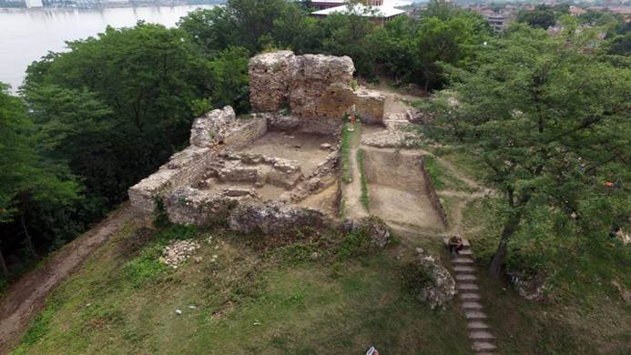
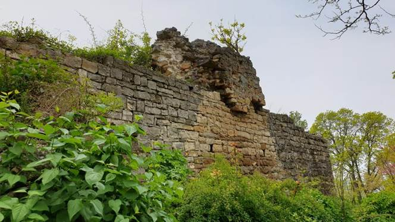

| Пещера Калето е преходна пещера в Родопите, която представлява огромен скален свод и
служи за преход към върха, където са останките от стара едноименна крепост. Намират се край смолянското село Кошница. Поели сме по
маршрута Смолян - Чокманово - Смилян - Кошница, на около километър преди село Кошница има паркинг и беседка. |
 |
|  | От там започва пешеходния преход за върха, където са пещерата и крепостта. Има
достатъчно туристически табели, упътващи туристите за пътя им до върха. След преминаването на реката, теренът е стръмен, но при спокоен
ход за около двайсетина минути стигаме до пещерата. Върху нея е изградена крепостта Калето. |